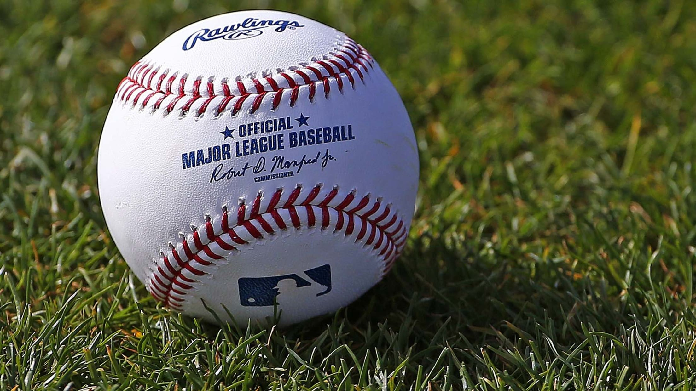

Baseball is my favorite sport and has been since I was very young. I am a die hard Red Sox fan and recently went to Boston this summer to watch a couple games. I'm studying statistics because I want to work as a sports statistician in the world of baseball.
Golf is another sport I really enjoy. I'm on the golf team at Montana Tech and I've been playing my whole life. It has created many great opportunities for me and led to some lifetime friendships.

You can learn more about baseball by visiting Major League Baseball.